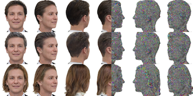
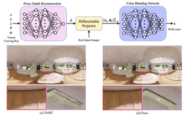
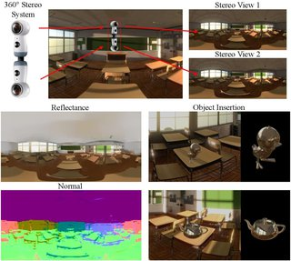
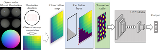
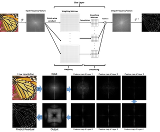
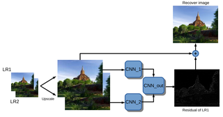

About
I'm a Research Scientist at Codec Avatars Lab, Meta, building photorealistic digital humans — from foundational avatar models to relighting, hair, faces, hands, and full-body articulation. My goal is to let anyone create a lifelike digital twin from a casual phone capture.
I received my Ph.D. from the Australian National University (advised by Hongdong Li and Yasuyuki Matsushita) and my B.Eng. from Shanghai Jiao Tong University.
Interested in interning with us? I'm always looking for motivated students working on 3D vision, neural rendering, or generative models — drop me an email!
News
- 🎉 NEW One paper accepted at CVPR 2026 — LCA: Large-scale Codec Avatars!
- One paper accepted at ICCV 2025 as Oral Presentation!
- Two papers accepted at SIGGRAPH 2025!
- Three papers accepted at CVPR 2025 — Vid2Avatar-Pro!
- One paper accepted at SIGGRAPH Asia 2024 — URAvatar!
- One paper accepted at CVPR 2024 as Oral Presentation!
- Two papers accepted at CVPR 2023!
Experience
Research Scientist
Codec Avatars Lab, Meta
Research Intern
Tencent
Research Scientist Intern
Reality Labs Research, Meta
Publications
Large-scale Codec Avatars: The Unreasonable Effectiveness of Large-scale Avatar Pretraining
CVPR 2026
LCA is a high-fidelity, full-body 3D avatar model that generalizes to world-scale populations via large-scale pre/post-training, achieving precise expressions, finger-level articulation, and emergent relightability.
HairCUP: Hair Compositional Universal Prior for 3D Gaussian Avatars
ICCV 2025 Oral Presentation
A universal prior model, HairCUP, explicitly disentangles hair and face components to enable flexible hairstyle swapping and the creation of high-fidelity 3D head avatars from only a few images.
Relightable Full-body Gaussian Codec Avatars
ACM Transactions on Graphics (SIGGRAPH 2025)
The first drivable, full-body avatar that can be realistically relighted is introduced, employing a new method to manage complex lighting effects on an articulated body.

3DGH: 3D Head Generation with Composable Hair and Face
ACM Transactions on Graphics (SIGGRAPH 2025)
A novel generative model, 3DGH, creates a wide variety of 3D heads by freely composing different hair and face components.
FRESA: Feedforward Reconstruction of Personalized Skinned Avatars from Few Images
CVPR 2025
Personalized and animatable 3D avatars are reconstructed with a fast, feed-forward method from just a few images, removing the need for per-subject optimization.
LUCAS: Layered Universal Codec Avatars
CVPR 2025
High-fidelity, real-time 3D avatars efficient enough for mobile devices are created using a layered model that separates the hair and face.
Vid2Avatar-Pro: Authentic Avatar from Videos in the Wild via Universal Prior
CVPR 2025
Authentic, animatable 3D avatars are generated from challenging videos captured "in the wild" by leveraging a universal prior model.
URAvatar: Universal Relightable Gaussian Codec Avatars
SIGGRAPH Asia 2024
We present URAvatar, a high-fidelity Universal prior for Relightable Avatars. You can create URAvatar (Your Avatar) from a phone scan.
Relightable Gaussian Codec Avatars
CVPR 2024 Oral Presentation
We build high-fidelity relightable & animatable head avatars with 3D-consistent sub-millimeter details such as hair strands and pores on dynamic face sequences.
MEGANE: Morphable Eyeglass and Avatar Network
CVPR 2023
A 3D compositional morphable model of eyeglasses with a hybrid surface-volumetric representation, enabling geometry modification, lens insertion, frame deformation, and relightable rendering with realistic face-glasses shadow interactions.
In-the-wild Inverse Rendering with a Flashlight
CVPR 2023
A practical in-the-wild inverse rendering method that recovers scene geometry and reflectance from smartphone images by exploiting the built-in flashlight as a minimally controlled light source.
Self-calibrating Photometric Stereo by Neural Inverse Rendering
ECCV 2022
A self-supervised neural network for uncalibrated photometric stereo that jointly estimates surface shape and light sources without supervision.
Neural Reflectance for Shape Recovery with Shadow Handling
CVPR 2022 Oral Presentation
Self-supervised shape and material estimation with explicit shadow prediction, achieving state-of-the-art surface normal accuracy an order of magnitude faster than prior methods.

Neural Plenoptic Sampling: Learning Light-field from Thousands of Imaginary Eyes
ACCV 2022
A neural plenoptic function representation with proxy depth and color-blending, achieving higher PSNR and over 10x faster training/testing than prior methods.




Stereo Super-resolution via a Deep Convolutional Network
DICTA 2017
A deep stereo super-resolution network that efficiently combines structural information across large regions via residual learning.